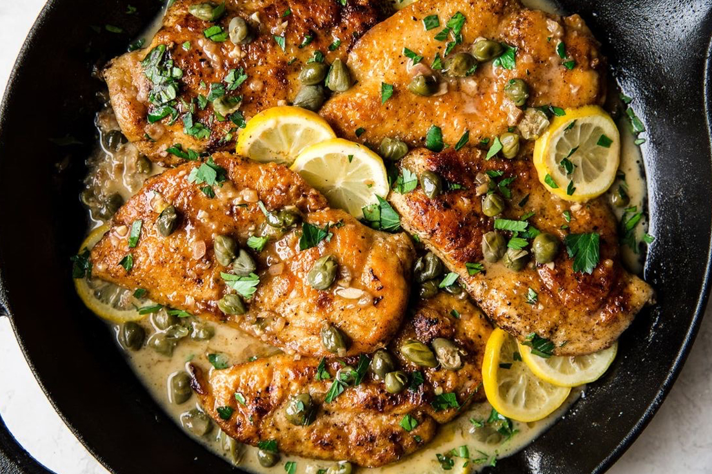
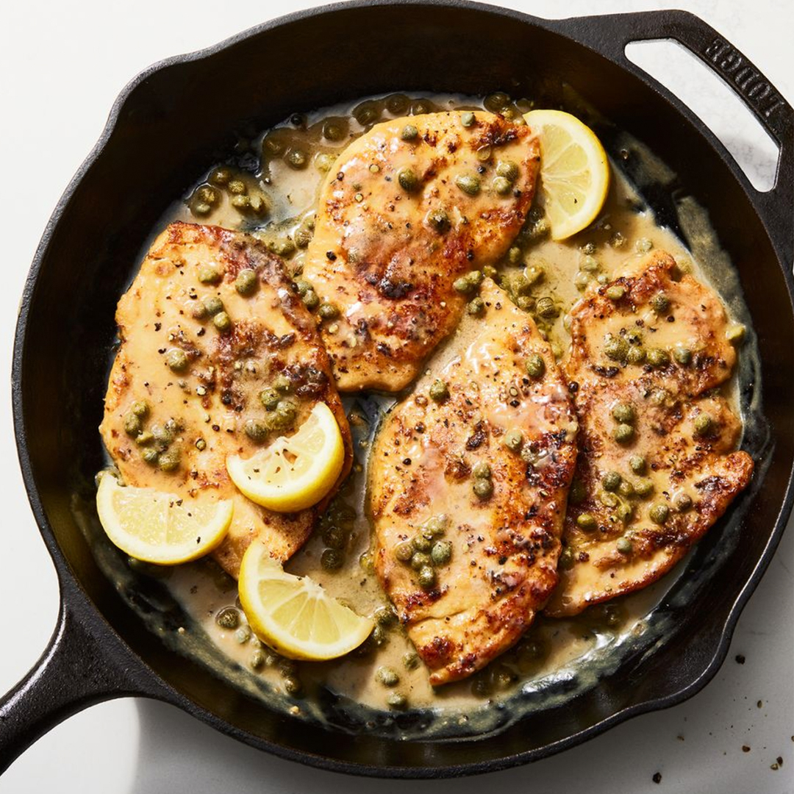
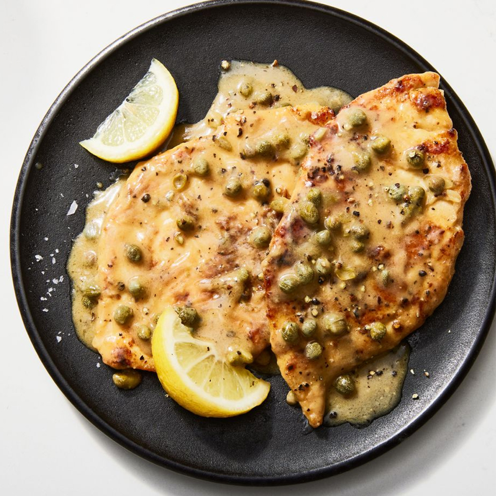

Perfect Chicken Piccata

A classic recipe, chicken piccata combines thin and delicate
chicken breasts with a tart caper, white wine, lemon juice,
and creamy buttery sauce topped with briny capers.
Its ability to be ready and on the table in 30 minutes makes it an easy sell,
whether you’re serving up a dinner party, a simple weekly dinner, or even as
meal prep for the week. The best part? This creamy chicken
dish makes for even better leftovers.
The chicken piccata sauce:
Like many of our chicken dinners, this dish is really all about the creamy,
bright sauce. We’ve got two components that really help bring out the
potential of the sauce: white wine and lemon juice. Having a very creamy
sauce means that you need that acid to break through it.
With the creamy sauce we’re creating, you’re going to want those sharp,
bright flavors to come through.
In this recipe, we’re mounting butter. What in the Julia Child is that?
It uses very small and cold pieces of butter to thicken a liquid—in
this case, our chicken stock, lemon juice, and white wine.
It’s essential to be patient with this step by whisking in
each piece of butter, one at a time, and not letting it boil.
Keep it all only a gentle simmer. If you learn how to mount butter,
you can apply it to any sauce you would like!
The chicken:
For tender, evenly cooked chicken, make sure to pound your chicken breasts before cooking.
Pounding will break down that toughness, give you an even cook,
and will cut down on the overall cooking time required.
Trust us—don’t skip this step.
Serving ideas for piccata:
Wanna make things fancy? Treat yourself to a
full four-course meal! Have our antipasto skewers as an appetizer,
mashed potatoes, roasted carrots, and green bean salad as sides,
and perhaps a raspberry sorbet to cleanse the palate.
Storage:
Got leftovers? Store them in an airtight container in the fridge for 3 to 4 days.
Heat up and enjoy as is, or get creative and make a tomato and chicken piccata
sandwich (you’ll thank us later)
Ingredients
- 3 boneless, skinless chicken breasts
- Kosher salt
- Freshly ground black pepper
- 1/4 c. (30 g.) all-purpose flour
- 1/2 c. extra-virgin olive oil, divided
- 6 tbsp. cold unsalted butter, cut into pieces
- 1/2 c. dry white wine
- 1/2 c. low-sodium chicken broth
- Juice of 1 lemon
- 1 (3.5-oz.) jar capers, rinsed
- Lemon wedges, for serving

Recipe Instructions
-
Cut chicken breasts in half parallel to work surface all the way through.
In between 2 sheets of plastic wrap, pound each breast until 1/4" thick;
generously season with salt and pepper.
-
In a large shallow bowl, place flour. Dredge chicken in flour, shaking off excess.
In a large skillet over high heat, heat 1/4 cup oil until very hot.
Working with 3 chicken pieces at a time, cook, turning once, until golden brown,
about 2 minutes per side. Transfer to a plate.
Adjust heat as needed and repeat with remaining chicken.
-
In same skillet over high heat, bring wine, broth, and lemon juice to a boil.
Cook, stirring occasionally, until thickened and reduced by about one-quarter, about 5 minutes.
Reduce heat to low and add butter, one piece at a time, vigorously whisking after each addition;
don’t stop whisking until all butter is incorporated.
If sauce starts to break, add 1 tablespoon water and
continue to whisk until sauce is smooth and glossy.
-
Return chicken to skillet. Add capers, bring sauce to a light simmer,
and cook until warmed through, about 3 minutes.
Serve with lemon wedges alongside.
